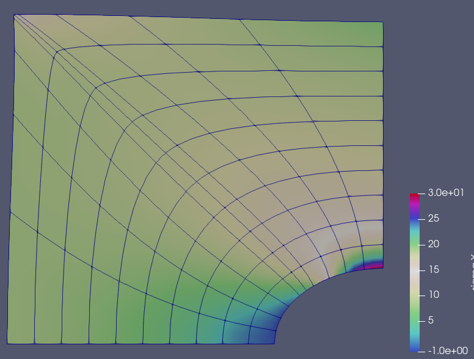

Infinite plate with hole

In this example we will solve a simple elasticity problem; an infinite plate with a hole. The main goal of the tutorial is to show how one can solve the problem using Isogeometric Analysis (IGA), or in other words, solving a FE-problem with splines as the basis/shape functions. By using so called bezier extraction, we will see that most of the structure of the code will be the same as in standard FE-codes (however many differences are happening "under the hood").
It is expected that the reader already be familiar with IGA and the concept of "bezier extraction". It is also expected that the reader is familiar with the Ferrite package. In particular Ferrite.DofHandler and Ferrite.CellValues.
Start by loading the necessary packages
using Ferrite, IGA, LinearAlgebraNext we define the functions for the integration of the element stiffness matrix and traction force. These functions will be the same as for a normal finite elment problem, but with the difference that we need the cell coorinates AND cell weights (the weights from the NURBS shape functions), to reinitilize the shape values, dNdx. Read this page, to see how the shape values are reinitilized.
function integrate_element!(ke::AbstractMatrix, C::SymmetricTensor{4,2}, cv)
n_basefuncs = getnbasefunctions(cv)
δɛ = [zero(SymmetricTensor{2,2,Float64}) for i in 1:n_basefuncs]
for q_point in 1:getnquadpoints(cv)
for i in 1:n_basefuncs
δɛ[i] = symmetric(shape_gradient(cv, q_point, i))
end
dΩ = getdetJdV(cv, q_point)
for i in 1:n_basefuncs
for j in 1:n_basefuncs
ke[i, j] += (δɛ[i] ⊡ C ⊡ δɛ[j]) * dΩ
end
end
end
end;
function integrate_traction_force!(fe::AbstractVector, t::Vec{2}, fv)
n_basefuncs = getnbasefunctions(fv)
for q_point in 1:getnquadpoints(fv)
dA = getdetJdV(fv, q_point)
for i in 1:n_basefuncs
δu = shape_value(fv, q_point, i)
fe[i] += t ⋅ δu * dA
end
end
end;The assembly loop is also written in almost the same way as in a standard finite element code. The key differences will be described in the next paragraph,
function assemble_problem(dh::DofHandler, grid, cv, fv, stiffmat, traction)
f = zeros(ndofs(dh))
K = allocate_matrix(dh)
assembler = start_assemble(K, f)
n = getnbasefunctions(cv)
celldofs = zeros(Int, n)
fe = zeros(n) # element force vector
ke = zeros(n, n) # element stiffness matrix
n = Ferrite.nnodes_per_cell(grid)
w = zeros(Float64, n)
x = zeros(Vec{2}, n)
wb = zeros(Float64, n)
xb = zeros(Vec{2}, n)
# Assemble internal forces
for cellid in 1:getncells(grid)
fill!(fe, 0.0)
fill!(ke, 0.0)
celldofs!(celldofs, dh, cellid)
# In a normal finite elment code, this is the point where we usually get the coordinates of the element `X = getcoordinates(grid, cellid)`. In this case, however,
# we also require the cell weights, and we need to transform them to the bezier mesh.
extr = get_extraction_operator(grid, cellid) # Extraction operator
get_bezier_coordinates!(xb,wb,x,w,grid,cellid) #Nurbs coords
set_bezier_operator!(cv, extr, w)
reinit!(cv, (xb,wb)) ## Reinit cellvalues by passsing both bezier coords and weights
integrate_element!(ke, stiffmat, cv)
assemble!(assembler, celldofs, ke, fe)
end
# Assamble external forces
for (cellid, faceid) in getfacetset(grid, "left")
fill!(fe, 0.0)
celldofs!(celldofs, dh, cellid)
beziercoords = getcoordinates(grid, cellid)
reinit!(fv, beziercoords, faceid)
integrate_traction_force!(fe, traction, fv)
f[celldofs] += fe
end
return K, f
end;This is a function that returns the elastic stiffness matrix
function get_material(; E, ν)
λ = E*ν / ((1 + ν) * (1 - 2ν))
μ = E / (2(1 + ν))
δ(i,j) = i == j ? 1.0 : 0.0
g(i,j,k,l) = λ*δ(i,j)*δ(k,l) + μ*(δ(i,k)*δ(j,l) + δ(i,l)*δ(j,k))
return SymmetricTensor{4, 2}(g)
end;We also create a function that calculates the stress in each quadrature point, given the cell displacement and such...
function calculate_stress(dh, cv::BezierCellValues, C::SymmetricTensor{4,2}, u::Vector{Float64})
celldofs = zeros(Int, ndofs_per_cell(dh))
#Store the stresses in each qp for all cells
cellstresses = Vector{SymmetricTensor{2,2,Float64,3}}[]
for cellid in 1:getncells(dh.grid)
bc = getcoordinates(dh.grid, cellid)
reinit!(cv, bc)
celldofs!(celldofs, dh, cellid)
ue = u[celldofs]
qp_stresses = SymmetricTensor{2,2,Float64,3}[]
for qp in 1:getnquadpoints(cv)
ε = symmetric(function_gradient(cv, qp, ue))
σ = C ⊡ ε
push!(qp_stresses, σ)
end
push!(cellstresses, qp_stresses)
end
return cellstresses
end;Now we have all the parts needed to solve the problem. We begin by generating the mesh. IGA.jl includes a couple of different functions that can generate different nurbs patches. In this example, we will generate the patch called "plate with hole". Note, currently this function can only generate the patch with second order basefunctions.
order = 2 # order of the NURBS
nels = (20, 10) # Number of elements
nurbsmesh = generate_nurbs_patch(:plate_with_hole, nels, order);Performing the computation on a NURBS-patch is possible, but it is much easier to using "bezier-extraction". For this we transform the NURBS-patch into a BezierGrid. The BezierGrid is identical to the standard Ferrite.Grid, but includes the NURBS-weights and bezier extraction operators.
grid = BezierGrid(nurbsmesh);Next, create some facesets. This is done in the same way as in normal Ferrite-code. One thing to note however, is that the nodes/controlpoints, does not necessary lay exactly on the geometry due to the non-interlapotry nature of NURBS spline functions. However, in most cases they will be close enough to use the Ferrite functions below.
addnodeset!(grid, "right", (x) -> x[1] ≈ -0.0)
addfacetset!(grid, "left", (x) -> x[1] ≈ -4.0)
addfacetset!(grid, "bot", (x) -> x[2] ≈ 0.0)
addfacetset!(grid, "right", (x) -> x[1] ≈ 0.0);Create the cellvalues storing the shape function values. Note that the CellVectorValues/FaceVectorValues are wrapped in a BezierValues. It is in the reinit-function of the BezierValues that the actual bezier transformation of the shape values is performed.
ip_geo = IGAInterpolation{RefQuadrilateral,order}()
ip_u = ip_geo^2
qr_cell = QuadratureRule{RefQuadrilateral}(4)
qr_face = FacetQuadratureRule{RefQuadrilateral}(3);
cv = BezierCellValues(qr_cell, ip_u)
fv = BezierFacetValues(qr_face, ip_u);Distribute dofs as normal
dh = DofHandler(grid)
add!(dh, :u, ip_u)
close!(dh);
ae = zeros(ndofs(dh))
IGA.apply_analytical_iga!(ae, dh, :u, x -> x);Add two symmetry boundary condintions. Bottom face should only be able to move in x-direction, and the right boundary should only be able to move in y-direction
ch = ConstraintHandler(dh)
dbc1 = Dirichlet(:u, getfacetset(grid, "bot"), (x, t) -> 0.0, 2)
dbc2 = Dirichlet(:u, getfacetset(grid, "right"), (x, t) -> 0.0, 1)
add!(ch, dbc1)
add!(ch, dbc2)
close!(ch)
update!(ch, 0.0);Define stiffness matrix and traction force
stiffmat = get_material(E=100, ν=0.3)
traction = Vec((-10.0, 0.0))
K, f = assemble_problem(dh, grid, cv, fv, stiffmat, traction);Solve
apply!(K, f, ch)
u = K \ f;Now we want to export the results to VTK. So we calculate the stresses in each gauss-point, and project them to the nodes using the L2Projector from Ferrite. Node that we need to create new CellValues of type CellScalarValues, since the L2Projector only works with scalar fields.
cellstresses = calculate_stress(dh, cv, stiffmat, u);L2 projections currently broken for IGA projector = L2Projector(ipu, grid) σnodes = project(projector, cellstresses, qr_cell)
IGA.VTKIGAFile("plate_with_hole.vtu", grid) do vtk
write_solution(vtk, dh, u)
#IGA.write_projections(vtk, projector, σ_nodes, "σ")
end;This page was generated using Literate.jl.